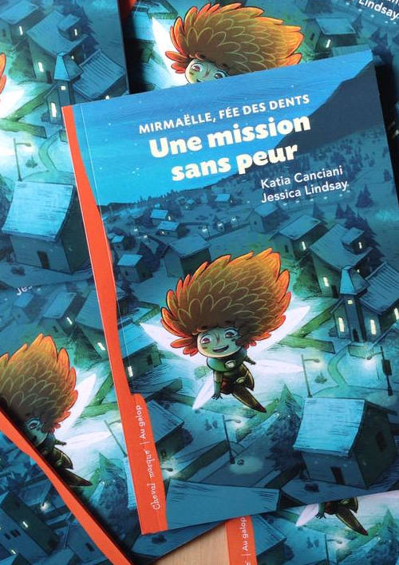
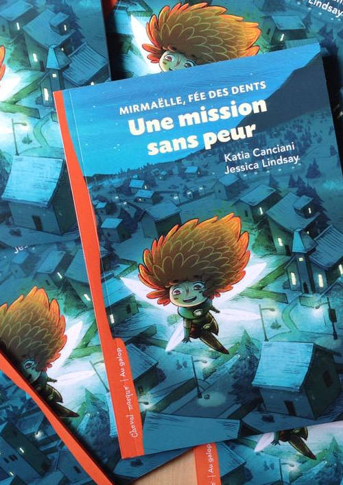

About
About Projects
Projects Books
Books Games
Games Stories
Stories Store
Store Notes
Notes How-to
How-toBetween the years of 2008 and 2023 I published a lot of children's books for Canadian publishers like ERPI, Boréal, Secondstory Press, Courte-Echelle, Transcontinental, Druide, Bayard Canada, Kayak etc.
View a full list of my publications.
Mirmaelle
I illustrated 2 books for this series: Une mission sans peur(2015) and Un Noël surprenant(2016). It was written by Katia Canciani and published by Bayard Canada.


 

La Cabane dans L'arbre
Written by Danielle Charland, and published by Bayard Canada in 2016


TC Media
I collaborate with this publishing company often to make small illustrations for school manuals, or to make covers.


Rouge Tomate
I illustrated 5 books for this series: Le graffiti sanglant(2015), La sorcière de notre rue(2014), Un vrai cauchemar(2015), Opération noel(2015), and Les araignées monstres(2017). Written by Édith Bourget and published by Éditions du Boréal.


Destination Monstroville
I illustrated 5 books for this series: Moche Café(2013), Le Salon de Décoiffure(2014), La Bibliopet(2015), Le Laidorama(2015), and Le Ooz(2017). Written by Sophie Rondeau and Nadine Descheneaux, published by Éditions Druide.


Des rêves fous, fous, fous
Bernadette Renaud, ERPI, 2011.


Other
First image is from Le Catalogue de Robots by Jean-Pierre Guillet, published by Bayard Canada in 2013. The second and third is Skateboard Sibby written by Clare O'Connor and published by Secondstory Press in 2018. The fourth is La Queue de L’espionne written by Danielle Simard and published by Bayard Canada in 2011. The fifth is a spot illustration for Kayak issue 50.